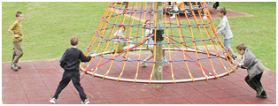
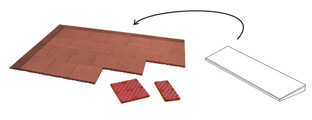

Les dalles antichute (norme EN1177) sont plus particulièrement destinées aux zones de récréation, aux plaines de jeux et aux allées. Ces dalles, avec tenon et mortaise, sont disponibles en rouge brun (autres couleurs sur demande).
Dalles antichute 500 x 500 mm (épaisseurs de 30-40-50-70-90)
Dalles de bord 250 x 1000 mm